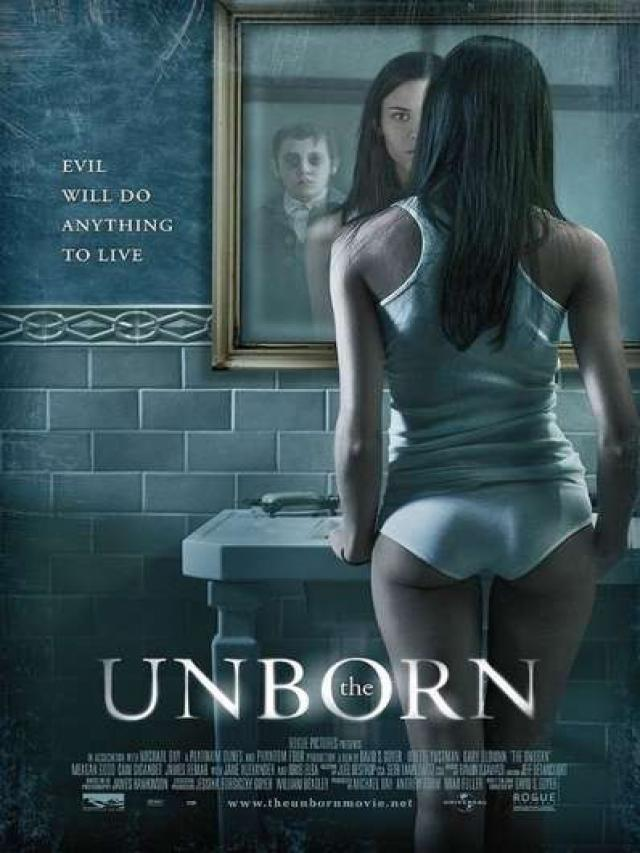

|  | Una joven de 19 años (Odette Yustman) sufre los ataques de un "dybbuk", un alma en pena de una persona muerta que ha sido expulsada del Cielo. Este dybbuk en particular tendrá la forma de un joven que falleció en el campo de concentración de Auschwitz. Junto a su novio (Cam Gigandet) y un especialista en temas paranormales (Gary Oldman), se unirá para acabar con la maldición que tan malos momentos trae a la joven. |